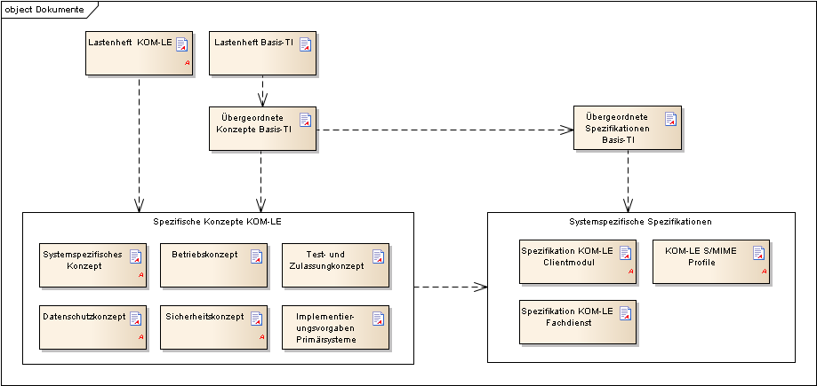
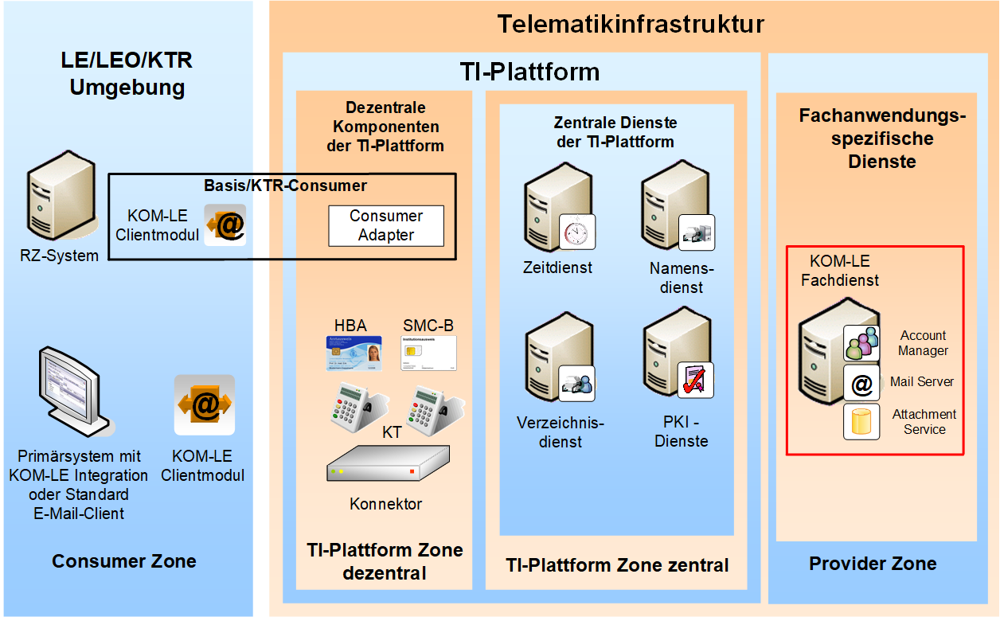
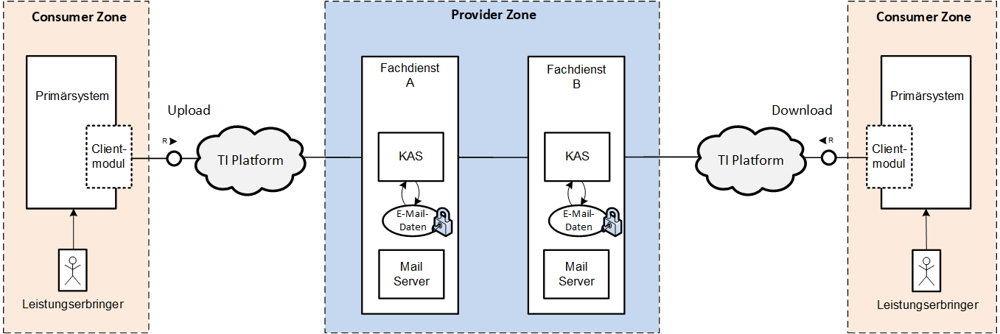
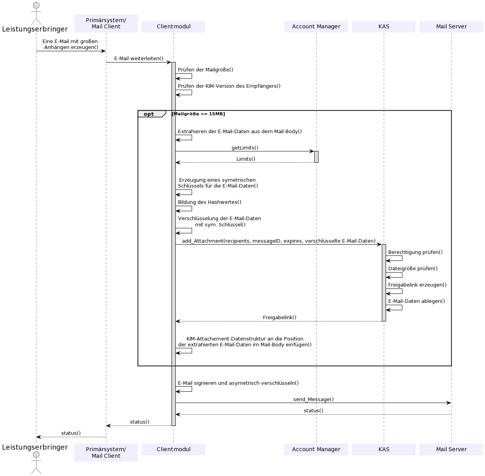

Elektronische Gesundheitskarte und Telematikinfrastruktur
Spezifikation Fachdienst KOM-LE
| Version | 1.17.0 |
| Revision | 571454 |
| Stand | 13.01.2023 |
| Status | freigegeben |
| Klassifizierung | öffentlich |
| Referenzierung | gemSpec_FD_KOMLE |
Änderungen zur Vorversion
Anpassungen des vorliegenden Dokumentes im Vergleich zur Vorversion können Sie der nachfolgenden Tabelle entnehmen.
Dokumentenhistorie
| Version |
Stand |
Kap./ Seite |
Grund der Änderung, besondere Hinweise |
Bearbeitung |
|---|---|---|---|---|
| 0.1.0 |
02.12 |
Ersterstellung |
Projekt KOM-LE |
|
| 04. 13 |
Einfügen Anforderungen mit Afo-Makro |
Projekt KOM-LE |
||
| 1.0.0 |
27.01.14 |
Einarbeitung Kommentare |
Projekt KOM-LE |
|
| 1.1.0 |
28.02.14 |
3.1 |
Hinweis ergänzt |
Projekt KOM-LE |
| 1.2.0 |
25.07.14 |
4.3 |
Afo zu Schnittstellen der TI-Plattform ergänzt |
Projekt KOM-LE |
| 1.3.0 |
22.09.14 |
Begriff Betreiber durch Anbieter ersetzt |
||
| 1.4.0 |
06.05.15 |
Anpassung Anforderung KOM-LE-A_2146 |
Projekt KOM-LE |
|
| 1.5.0 |
24.07.15 |
3.1 |
Präzisierung der Erstellung von Abwesenheitsnotizen (2 neue Afos) |
P74 |
| 1.6.0 |
28.10.16 |
4.3 |
Anpassungen gemäß Änderungsliste |
gematik |
| 1.7.0 |
14.05.18 |
Anpassungen gemäß Änderungsliste |
gematik |
|
| 1.8.0 |
15.05.19 |
Anpassungen gemäß Änderungsliste P18.1 |
gematik |
|
| 1.9.0 | 02.03.20 | Anpassungen gemäß Änderungsliste P21.1 |
gematik |
|
| 1.10.0 | 30.06.20 | Anpassungen gemäß Änderungsliste P22.1 und Scope-Themen aus Systemdesign R4.0.0 | gematik | |
| 1.11.0 | 12.11.20 | Anpassungen gemäß Änderungsliste P22.2 und Scope-Themen aus Systemdesign R4.0.1 | gematik | |
| 1.11.1 | 18.12.20 | Anpassungen gemäß Änderungsliste P22.4 | gematik | |
| 1.11.2 | 08.01.21 | Anpassungen gemäß Änderungsliste P22.6 | gematik | |
| 1.12.0 | 19.02.21 | Anpassungen gemäß Änderungsliste P22.5 | gematik | |
| 1.13.0 | 06.04.21 | Anpassungen gemäß Änderungsliste KIM_Maintenance_21.1/ KIM 1.5.1 |
gematik | |
| 1.14.0 | 04.08.21 | Anpassungen gemäß Änderungsliste KIM_Maintenance_21.1/ KIM 1.5.1-3 |
gematik | |
| 1.15.0 | 31.01.22 | Anpassungen gemäß Änderungsliste KIM Maintenance 21.3 /KIM 1.5.2 | gematik | |
| 1.16.0 | 20.09.22 | Anpassungen gemäß Änderungsliste KIM_Maintenance_22.2 - KIM 1.5.2-1 (C_11209) | gematik | |
| 1.17.0 | 13.01.23 | Anpassungen gemäß Änderungsliste KIM_Maintenance_22.3 - KIM 1.5.2-2 | gematik |
Dieses Dokument enthält die Anforderungen an den Produkttyp Fachdienst KOM-LE. Der Fachdienst ist verantwortlich für die Speicherung und Bereitstellung von KOM-LE-Nachrichten sowie für die Registrierung und Deregistrierung von KOM-LE-Teilnehmern.
Aus den Kommunikationsbeziehungen mit Clientmodul, Konnektor und Verzeichnisdienst resultieren vom Fachdienst anzubietende Schnittstellen, die in diesem Dokument normativ beschrieben werden. Vom Fachdienst genutzte Schnittstellen liegen zumeist in anderen Verantwortungsbereichen (z.B. Verzeichnisdienst). Diese werden in der entsprechenden Produkttypspezifikationen definiert.
Dieses Dokument richtet sich neben Personengruppen, die grundsätzlich am Fachdienst Kommunikation Leistungserbringer interessiert sind, an
Das vorliegende Dokument enthält normative Anforderungen und Festlegungen, die von Herstellern und Anbietern von Komponenten und Diensten im Rahmen der Projekte der Neuausrichtung zur Einführung der elektronischen Gesundheitskarte und der Telematikinfrastruktur zu beachten sind. Der Gültigkeitszeitraum der vorliegenden Version und deren Anwendung in Zulassungsverfahren werden durch die gematik GmbH in gesonderten Dokumenten (z.B. Dokumentenlandkarte, Produkttypsteckbrief, Leistungsbeschreibung) festgelegt und bekannt gegeben.
Grundlagen für die Ausführungen dieses Dokumentes sind
Spezifiziert werden in dem Dokument die vom Produkttyp bereitgestellten (angebotenen) Schnittstellen. Benutzte Schnittstellen werden hingegen in der Spezifikation desjenigen Produkttypen beschrieben, der diese Schnittstelle bereitstellt. Auf die entsprechenden Dokumente wird referenziert.
Die Systemlösung der Fachanwendung KOM-LE ist im systemspezifischen Konzept [gemSysL_KOMLE] beschrieben. Dieses Konzept setzt die fachlichen Anforderungen des Lastenheftes auf Systemebene um, zerlegt die Fachanwendung KOM-LE in die zugehörigen Produkttypen, darunter das KOM-LE-Clientmodul und der KOM-LE-Fachdienst. Ferner definiert es die Schnittstellen zwischen den einzelnen Produkttypen. Für das Verständnis dieser Spezifikation wird die Kenntnis von [gemSysL_KOM-LE] vorausgesetzt.
Die Anforderungen an das Clientmodul werden separat in der Spezifikation KOM-LE-Clientmodul [gemSpec_CM_KOMLE] beschrieben.
Die Anforderungen an das Format der KOM-LE-Nachrichten, die zwischen dem Clientmodul und dem Fachdienst übermittelt werden, werden separat im KOM-LE-S/MIME-Profil [gemSMIME_KOMLE] beschrieben.
Abbildung 1 zeigt schematisch die Einbettung des vorliegenden Dokuments in die Dokumentenlandschaft der Lastenheft- und Pflichtenheftphase in Form einer Dokumentenhierarchie.

Abbildung 1: Abb_Dok_Hierachie_KOMLE Dokumentenhierarchie KOM-LE
Das Vorgehen zur Erstellung dieser Spezifikation verwendet einen anforderungszentrierten und modellbasierten Entwicklungsprozess. Dabei werden Auftragsanforderungen über Umsetzungsanforderungen bis hin zu Blattanforderungen verfeinert. Auf Basis der vollständigen und nachvollziehbaren Anforderungen werden verbindliche Artefakte zur Fachanwendung modelliert. Der gesamte Prozess wird durch eine Qualitätssicherung begleitet.
Anforderungen als Ausdruck normativer Festlegungen werden durch eine eindeutige ID sowie die dem RFC 2119 [RFC2119] entsprechenden, in Großbuchstaben geschriebenen deutschen Schlüsselworte MUSS, DARF NICHT, SOLL, SOLL NICHT, KANN gekennzeichnet.
Sie werden im Dokument wie folgt dargestellt:
<AFO-ID> - <Titel der Afo>
Text / Beschreibung
[<=]
Dabei umfasst die Anforderung sämtliche innerhalb der Afo-ID und der Textmarke angeführten Inhalte.
Die Darstellung der Spezifikationen von Komponenten erfolgt auf der Grundlage einer durchgängigen Use-Case-Modellierung als
Sofern im Text dieser Spezifikation auf die Ausgangsanforderungen verwiesen wird, erfolgt dies in eckigen Klammern, z.B. [KOMLE-A_2015]. Wird auf Eingangsanforderungen verwiesen, erfolgt dies in runden Klammern, z.B. (KOMLE-A_202).
| Das Kapitel wird in einer späteren Version des Dokumentes ergänzt. |
Der Fachdienst KOM-LE ist in der Provider Zone an das zentrale Netz der TI-Plattform angeschlossen und besteht aus den Teilkomponenten Account Manager, Mail Server (SMTP und POP3-Server) und dem KOM-LE Attachment Service (KAS).
Die Teilkomponente Account Manager prüft die Authentizität des Leistungserbringers/KOM-LE-Teilnehmers sowie dessen Registrierungs- bzw. Deregistrierungsdaten. Nach erfolgreicher Prüfung der Daten erfolgt die Registrierung bzw. Deregistrierung des KOM-LE-Teilnehmers inklusive der Aktualisierung seines Verzeichniseintrages bezüglich der E-Mail-Adresse. Weitere Funktionsumfänge des Account Managers sind die Verwaltung von Abwesenheitsnotizen sowie das Eintragen der KIM-Version in den Verzeichnisdienst.
Die Teilkomponente Mail Server stellt dem KOM-LE-Clientmodul eine Schnittstelle zum Versenden und Abholen von E-Mails zur Verfügung. Die technische Umsetzung erfolgt über die Bereitstellung von entsprechenden TCP-Ports für SMTP- bzw. POP3.
Die Teilkomponente KOM-LE Attachment Service stellt dem Clientmodul eine Schnittstelle zum Ablegen bzw. Herunterladen von verschlüsselten E-Mail-Daten zur Verfügung.

Abbildung 2: Abb_FD_Systemkontext Fachdienst KOM-LE im Systemkontext
Der Mail Server nimmt SMTP-Nachrichten von Clientmodulen oder anderen KOM-LE-Fachdiensten entgegen und leitet diese an die Ziel-Mail-Server weiter. Empfangene Nachrichten werden vom Mail Server zur Abholung bereitgestellt und auf Anforderung über POP3 an Clientmodule ausgeliefert. Die zugehörigen Anwendungsfälle sind im systemspezifischen Konzept [gemSysL_KOM-LE#3.1.1, 3.1.5] beschrieben.
A_21383
Der Mail Server MUSS die Authentifizierung mit Benutzername und Passwort ermöglichen.
<=
KOM-LE-A_2185-01
Der Mail Server des KOM-LE-Fachdienstes MUSS ausschließlich Nachrichten, die innerhalb der TI versendet werden, verarbeiten. Der Zugriff auf einen Mail Server außerhalb der TI ist nicht zulässig.
<=
KOM-LE-A_2131-01
Können Nachrichten aufgrund einer fehlerhaften E-Mail-Adresse nicht weitergeleitet werden, MUSS der Mail Server eine Fehlernachricht entsprechend Delivery Status Notification gemäß [RFC3461-3464] erzeugen und diese an den Absender übermitteln.
<=
KOM-LE-A_2130
Der Ziel-Mail-Server MUSS, wenn die eingehende Nachricht eine Zustellbestätigung anfordert, diese entsprechend Delivery Status Notification vom Typ Success (RFC3461-3464) generieren und an den Absender übermitteln. <=
A_21777
Der Mail Server des KOM-LE-Fachdienstes MUSS, wenn er eine Nachricht mit angeforderter Delivery Status Notification (DSN) erhält, sicherstellen, dass eine DSN keine Teile des Bodies der originalen Nachricht enthält.
<=
KOM-LE-A_2223-01
Der Mail Server MUSS eine Autoreply-Funktionalität für das Versenden von Abwesenheitsnotizen nach [RFC5230] unterstützen.
<=
KOM-LE-A_2278-01
Der Mail Server MUSS beim Versenden von automatischen Abwesenheitsnotizen folgende Bedingungen erfüllen:
SMTP MAIL FROM = <>
Subject = „Auto: “ + Betreff der Nachricht beim Mailserver
Auto-Submitted field = „auto-replied” (siehe RFC5230, section 5).
Zusätzlich MUSS der Mail Server das Attribut X-KIM-Dienstkennung mit dem Wert "KIM-Mail;Abwesend;V1.0" gemäß [Dienstkennung] befüllen.
<=
KOM-LE-A_2224-01
Der Mail Server MUSS es dem Nutzer ermöglichen, Abwesenheitsnotizen über die Schnittstelle I_AccountManager_Service - wie in [AccountManager.yaml] definiert - einstellen zu können.
<=
KOM-LE-A_2277
Der Mail Server MUSS den Nutzer beim Einrichten von automatischen Abwesenheitsnotizen informieren, dass diese nicht als verschlüsselte und signierte Nachrichten versendet werden.
<= Die Pflege der Abwesenheitsfunktionen (z.B. Aktivieren, Deaktivieren und Notiztext) kann nicht mit dezentralen Komponenten der TI vorgenommen werden.
A_20978-01
Der KOM-LE Anbieter MUSS bei der Registrierung eines Teilnehmers prüfen, ob eine Mailadresse bereits vergeben wurde. Die erneute Vergabe einer Mailadresse MUSS vom KOM-LE Anbieter unterbunden werden, es sei denn der Teilnehmer kann nachweisen, dass er bereits früher mit der selben Adresse registriert war. Der KOM-LE Anbieter MUSS hierbei sicherstellen, dass er nur Nachweise auf Basis sicherer Authentisierungsfaktoren akzeptiert.
Der KOM-LE Anbieter MUSS hierbei die Datenschutzkonformität des Nachhaltens hierfür notwendiger Daten sicherstellen.
<=
Da diese Anforderung ohne Aufbewahrung personenbezogener Daten realisierbar ist (z.B. durch Vorhalten von Hashes der deregistrierten KIM-Adressen und der KIM-Adress - Telematik-ID Paare) ist hierbei eine Verwendung von personenbezogenen Daten nicht zulässig.
A_21455
Der KIM-Anbieter MUSS bei Vergabe des Localparts einer KIM-Adresse folgenden Zeichensatz akzeptieren:
A_21456-01
Der KIM-Anbieter MUSS für die Beantragung seiner KIM spezifische Subdomain (hrst_domain) einer KIM-Adresse folgenden Zeichensatz verwenden:
Beispiel: praxis-dr.mueller@hrst_domain.kim.telematik
A_21816
Der Mail Server des KOM-LE-Fachdienstes MUSS als ein geschlossener SMTP-Relay-Server konfiguriert werden. Das bedeutet, der Mail Server darf nur E-Mails weiterleiten, für die er als Sender und/oder Empfänger zuständig ist. <=
A_22415
Der Anbieter des Mail Servers MUSS sicherstellen, dass alle gespeicherten E-Mails eines Accounts mit abgelaufener Gültigkeit (Expires-Header) gelöscht werden.
<=
A_23421
Der Fachdienst KOM-LE MUSS den bei der Authentisierung vom Clientmodule übermittelten Username (SMTP AUTH) mit der Adresse im MAIL FROM Kommando vergleichen. Sollte bei dem Vergleich ein Unterschied festgestellt werden (RFC 5322 „addr-spec“), MUSS der Fachdienst die Verarbeitung der KOM-LE-Mail ablehnen und das Clientmodule mit einem SMTP Fehler informieren.
<=
Hinweis: Gemäß KOM-LE-A_2161 entspricht der in der SMTP-Authentifizierung anzugebende Benutzername der E-Mail-Adresse des KOM-LE-Teilnehmers.
A_23422
Der Fachdienst KOM-LE MUSS vor der Verarbeitung einer KOM-LE-Nachricht folgende Prüfregeln umsetzen:
Hinweis: Item (2) entspricht dem Anwendungsfall Versand/Weiterleitung „an sich selbst“.
Über die Teilkomponente Accout Manager des Fachdienstes wird die Kontoverwaltung eines KOM-LE-Teilnehmers durchgeführt. Zu dem Funktionsumfang gehören:
KOM-LE-A_2133
Führt der Anbieter ein Accounting für die Abrechnung unter Einhaltung der geltenden Anforderungen an Datenschutz und Informationssicherheit durch, KANN der Fachdienst die dafür notwendigen Funktionen implementieren.
<=KOM-LE-A_2304
Der KOM-LE-Anbieter MUSS die KOM-LE-Teilnehmer im Rahmen der Registrierung zu KOM-LE und im KOM-LE-Nutzerhandbuch darüber informieren, dass auf eine Nutzung der bcc-Funktionalität eines E-Mail-Clients verzichtet werden sollte, da es technisch nicht ausgeschlossen ist, dass Nachrichtenempfänger ggf. auch alle bcc (blind carbon copy) Empfänger der Nachricht ermitteln werden können. <=
Es kann zusätzlich darauf hingewiesen werden, dass dies nicht die Klartext-Nachricht betrifft, die ein Empfänger letztlich in seinem Mail-Client empfängt, sondern nur die Daten, die das KOM-LE-Clientmodul verarbeitet. Es ist also durch den Empfänger ein Eingriff zur Analyse des Clientmoduls (z.B. mit Hilfe eines Debuggers) durchzuführen, um an die Daten zu gelangen.
A_19591
Der Account Manager MUSS die vom Clientmodul übermittelte KIM-Version im Verzeichnisdienst in den KOM-LE-Fachdaten für die betroffene "mail"-Adresse eintragen. <=
Es gelten die Festlegungen aus Kap.4.4., da der Verzeichnisdienst zur TI-Plattform gehört.
A_21384
Für die Sperrung eines Zertifikates aus einer PKCS#12-Datei MUSS der KOM-LE-Anbieter einen organisatorischen Prozess definieren, mit dem das Zertifikat im Falle von Verlust, Diebstahl, oder sonstiger Kompromittierung beim Herausgeber gesperrt wird.
<=
A_21385
Der Account Manager MUSS bei der Registrierung eines neuen KOM-LE-Teilnehmers den Nutzer zum Wechseln des initialen Passwortes auffordern. Wird keine Passwortänderung durchgeführt, wird der Fehler 420 (W3C - Policy Not Fulfilled) zurück gegeben.
<=
A_21376
Der Account Manager MUSS die vom Clientmodul übermittelten KOM-LE-Fachdaten (gemäß gemSpec_VZD#Datenmodell) während der Registrierung eines neuen KOM-LE-Teilnehmers in den Verzeichnisdienst eintragen.
Bei Eintragung der KIM-Version in den Verzeichnisdienst ist folgendes Schema zu verwenden: <Hauptversionsnummer.Nebenversionsnummer>
<=
Die Teilkomponente KAS des Fachdienstes dient als Speicherort für verschlüsselte E-Mail-Daten, die durch Clientmodule aus Client-Mails extrahiert wurden. Damit wird die Übertragung von Mails größer 15 MiB ermöglicht. Das sendende KOM-LE Clientmodul legt die E-Mail-Daten in verschlüsselter Form auf dem KAS ab. Das empfangende KOM-LE Clientmodul lädt die verschlüsselten E-Mail-Daten nach dem Empfang der KOM-LE-Nachricht vom KAS des Absenders herunter und stellt sie dem Clientsystem in entschlüsselter Form zusammen mit der KOM-LE-Nachricht zur Verfügung. In der folgenden Abbildung wird die Funktionsweise des KAS gezeigt.
Abbildung 3: Abb_FD_KAS Funktionsweise des Attachment Service
Das sendende KOM-LE Clientmodul legt die verschlüsselten E-Mail-Daten auf dem KAS seines Fachdiensts A ab. Das empfangende KOM-LE Clientmodul lädt verschlüsselten E-Mail-Daten der Mail vom KAS des Fachdiensts A, auch wenn der Empfänger einen anderen Fachdienst (z. B. Fachdienst B) nutzt. Zur Kommunikation der Clientmodule mit den KAS Servern werden für TLS die TI Zertifikate analog zu Schnittstelle I_Message_Service genutzt, was die Kommunikation über Anbietergrenzen hinaus ermöglicht.
Die maximale Gesamtgröße einer zu übermittelnden Client-Mail wird durch den Fachdienst definiert und dem Clientmodul zur Verfügung gestellt. Das Clientmodul prüft die Gesamtgröße der im Client erzeugten Mail vor dem Versenden mit dem vom Fachdienst übermittelten Wert. Beim Hochladen der verschlüsselten E-Mail-Daten auf den KAS prüft dieser den vorhandenen Speicherplatz gemäß dem mit dem Anbieter vereinbarten Speichervolumen für den Nutzeraccount (Quota). Die Gestaltung der jeweiligen Quota-Regelung bleibt dem Anbieter überlassen (Marktmodell).
A_19524-01
Der KOM-LE-Fachdienst MUSS die aufgeführten Resource Records Types im Namensraum der TI gemäß folgender Tabelle verwalten.
Tabelle 1: Tab_KOMLE_Service Discovery
| Resource Record Bezeichner | Resource Record Type | Beschreibung |
|---|---|---|
| _fdkimsmtp._tcp.kim.telematik | PTR | Ermittlung aller KOM-LE-Anbieter (SMTP) |
| <fdkimsmtp>.<hrst_domain>.kim.telematik | SRV |
SRV Resource Record zur Ermittlung der Ports und des FQDN des KOMLE-LE Fachdienstes |
| _fdkimpop._tcp.kim.telematik | PTR | Ermittlung aller KOM-LE-Anbieter (POP3) |
| <fdkimpop>.<hrst_domain>.kim.telematik | SRV |
SRV Resource Record zur Ermittlung der Ports und des FQDN des KOMLE-LE Fachdienstes |
| _accmgr._tcp.kim.telematik | PTR | Ermittlung aller Account Manager Dienste aller KOM-LE-Anbieter. |
| <accmgr_service_name>.<hrst_domain>.kim.telematik | SRV und TXT |
SRV Resource Record zur Ermittlung der Ports und des FQDN des Accout Managers |
| _kas._tcp.kim.telematik | PTR | Ermittlung aller KAS-Dienste aller KOM-LE-Anbieter. |
| <kas_service_name>.<hrst_domain>.kim.telematik | SRV und TXT | SRV Resource Record zur Ermittlung der Ports und des FQDN des KAS |
Der Einträge in < > sind als Variable zu verstehen und durch konkrete Bezeichner zu ersetzen, z.B. für den Account Manager
_accmgr._tcp.kim.telematik 86400 IN PTR _accmgr._tcp.hrst1.kim.telematik
_accmgr._tcp.hrst1.kim.telematik 86400 IN SRV 5 10 8443 account-manager.hrst1.kim.telematik
_accmgr._tcp.hrst1.kim.telematik 86400 IN TXT „txtvers=1“ „path=/“
oder z.B. für den KAS
_kas._tcp.kim.telematik 86400 IN PTR _hrst1_kas._tcp.hrst1.kim.telematik
_kas._tcp.hrst1.kim.telematik 86400 IN SRV 5 10 8443 kas.hrst1.kim.telematik
_kas._tcp.hrst1.kim.telematik 86400 IN TXT „txtvers=1“ „path=/“
A_19533
Der KOM-LE-Fachdienst MUSS im Namensraum der TI die Resource Records gemäß nachstehender Tabelle verwalten.
Tabelle 2: Tab_KOMLE_FQDN
| Resource Record Typ |
Beschreibung |
|---|---|
| FQDN | A Resource Records zur Namensauflösung von FQDN des KOM-LE-Fachdienstes des jeweiligen Anbieters in IP-Adressen |
Nachfolgend sind exemplarisch FQDNs für den Account Manager und KAS dargestellt:
account-manager.hrst1.kim.telematik IN A 10.30.20.10
kas.hrst1.kim.telematik IN A 10.30.20.20
KOM-LE-A_2134
Der Fachdienst KOM-LE MUSS mindestens die in Tabelle Tab_Fehler_Behandlung beschriebenen Fehlerzustände erkennen und die zugehörigen Aktionen durchführen.
<=Tabelle 3: Tab_Fehler_Behandlung Fehlerbehandlung Fachdienst KOM-LE
| Teilkomponente |
Fehlerbeschreibung |
durchzuführende Aktionen |
|---|---|---|
| Mail Server |
Aufbau der TLS-Verbindung schlägt fehl |
Protokollierung des Fehlers, Übermittlung Fehlercode an den Aufrufer (z.B. Clientmodul) |
| Mail Server |
Authentifizierung über Benutzername und Passwort schlägt fehl |
Protokollierung des Fehlers, Übermittlung Fehlercode an den Aufrufer (z.B. Clientmodul) |
| Mail Server |
Nachricht ist nicht verschlüsselt |
Protokollierung des Fehlers, Generierung einer entsprechenden Fehlernachricht an den Absender, Verwerfen der Originalnachricht |
| Mail Server |
Absenderadresse fehlerhaft |
Protokollierung des Fehlers, Verwerfen der Originalnachricht |
| Mail Server |
Empfängeradresse fehlerhaft |
Protokollierung des Fehlers, Generierung einer entsprechenden Fehlernachricht an den Absender mit der Originalnachricht im Anhang, Verwerfen der Originalnachricht |
| Mail Server |
Nachricht kann nicht weitergeleitet werden (z. B.: empfangender Mail Server oder TI-Netz nicht verfügbar) |
Protokollierung des Fehlers, Versuch der erneuten Weiterleitung der Nachricht nach einem konfigurierbarem Zeitraum |
| Account Manager |
Verzeichnisdienst nicht erreichbar |
Protokollierung des Fehlers |
KOM-LE-A_2135-01
Für die Nachvollziehbarkeit der Vorgänge am Fachdienst KOM-LE MÜSSEN Maßnahmen und Verfahren gemäß DSGVO i.V.m. BDSG installiert werden. Die Protokollierung der folgenden Informationen ist dabei zulässig:
KOM-LE-A_2136
Der KOM-LE-Fachdienst MUSS sicherstellen, dass eine Protokollierung von personenbezogenen Daten außerhalb der gesetzlichen und vertraglichen Pflichten nur dann erfolgt, wenn dies zum Zwecke der Fehler- bzw. Störungsbehebung erforderlich ist.
<=KOM-LE-A_2137
Falls im KOM-LE-Fachdienst eine Protokollierung zum Zwecke der Fehler- bzw. Störungsbehebung erfolgt, MUSS der KOM-LE-Fachdienst unter Berücksichtigung des Art. 25 Abs. 2 DSGVO sicherstellen, dass in den Protokolldaten entsprechend dem Datenschutzgrundsatz nach Art. 5 DSGVO nur personenbezogene Daten in der Art und dem Umfang enthalten sind, wie sie zur Behebung erforderlich sind und dass die erzeugten Protokolldaten im Fachdienst nach der Behebung unverzüglich gelöscht werden.
<=
KOM-LE-A_2138
Die Administratoren des KOM-LE-Fachdienstes sind verpflichtet, zu jedem Zeitpunkt auskunftsfähig über den Systemzustand des Fachdienstes zu sein. Zur Unterstützung dieser Auskunftsfähigkeit KANN der KOM-LE-Fachdienst Monitoringfunktionen implementieren.
<=KOM-LE-A_2139-02
Der Fachdienst KOM-LE MUSS dem Anbieter mindestens die in der Tabelle Tab_Konfig_Parameter dargestellten Parameter zur Konfiguration zur Verfügung stellen. <=
Tabelle 4: Tab_Konfig_Parameter Konfigurationsparameter Fachdienst KOM-LE
| Parameter |
Standardwert |
Beschreibung |
|---|---|---|
| Maximale Nachrichtengröße |
700 MB |
Dieser Standardwert darf 700 MB nicht unterschreiten, da in KIM 1.5 mindestens 500 MB (netto) unterstützt werden müssen. Die Nachrichten werden unter Verwendung von S/MIME transportiert und auf dem Fachdienst gespeichert. Die Verwendung von S/MIME schließt die base64-Kodierung der Nachricht ein. Deshalb erhöht sich die Nachrichtengröße ca. um den Faktor 1,4 (brutto ca. 700 MB). |
| Zeitraum für erneute Weiterleitungsversuche |
15 Minuten |
Dieser Wert gibt an, in welchem Intervall ein Weiterleitungsversuch durch den Mail Server unternommen werden soll. |
| Zeitraum für Weiterleitungsversuche | 2 Stunden | Nach Ablauf des konfigurierten Wertes werden keine weiteren Weiterleitungsversuche unternommen und es wird eine Fehlermeldung an den Sender übermittelt. |
| Löschfrist von Nachrichten |
90 Tage |
Nachrichten, die vom Fachdienst nicht abgeholt werden oder nach dem Abholen auf dem Fachdienst verbleiben, müssen nach der angegebenen Frist gelöscht werden. |
| Löschfrist für automatisch generierte Mails | 90 Tage | Diese Löschfrist gilt für Mails, die vom Server automatisch generiert werden, insbesondere Zustellbestätigungen (DSN) und Abwesenheitsnotizen (vacation) |
| Löschfrist von Logfiles |
90 Tage |
Die im Rahmen der Nachrichtenverarbeitung erzeugten Logfiles müssen nach der angegebenen Frist gelöscht werden. |
| Ablaufzeitspanne | 5 Minuten | Ablaufzeitspanne für die Requests zum Account Manager. Nach Ablauf der Zeitspanne müssen die Requests abgelehnt werden. |
| Download- und Prüfzyklus der TSL |
1 Tag |
Regelmäßiger Zyklus in dem die aktuelle TSL zu laden und zu prüfen ist. |
| Downloadpunkt der TSL |
- |
IP-Adresse des verwendeten Downloadpunktes der TSL |
| IP-Adresse DNS-Server |
- |
IP-Adresse des verwendeten DNS-Servers der TI |
| IP-Adresse NTP-Server |
- |
IP-Adresse des verwendeten NTP-Servers der TI |
| IP-Adresse Verzeichnisdienst |
- |
IP-Adresse des Verzeichnisdienstes der TI |
A_17240
Der Fachdienst KOM-LE MUSS parallel RSA und ECC unterstützen. Als TLS-Client MUSS der Fachdienst KOM-LE bevorzugt ECC verwenden, falls er auf einen TLS-Server, der beide Verfahren unterstützt, trifft. <=
KOM-LE-A_2140
Die Teilkomponente Mail Server des KOM-LE-Fachdiensts MUSS die Schnittstelle I_Message_Service anbieten. I_Message_Service ist eine logische Schnittstelle, die Funktionalitäten zum Versenden und Empfangen von E-Mail-Nachrichten bereitstellt. Die Schnittstelle bietet die folgenden Operationen:
KOM-LE-A_2141
Die technische Umsetzung der Schnittstelle I_Message_Service erfolgt über die Bereitstellung von entsprechenden TCP-Ports am KOM-LE-Fachdienst für SMTP-bzw. POP3-Verbindungen. Die Schnittstelle MUSS ausschließlich über eine sichere Verbindung unter Verwendung von TLS mit beidseitiger zertifikatsbasierter Authentifizierung zugänglich sein.
<=
KOM-LE-A_2226
Der KOM-LE-Anbieter MUSS das KOM-LE Clientmodul mit einem TLS-Client-Zertifikat aus der Komponenten-PKI der TI für die TLS-Kommunikation mit dem KOM-LE Fachdienst ausstatten.
<=KOM-LE-A_2227
Der KOM-LE-Anbieter MUSS das KOM-LE Clientmodul mit einem TLS-Server-Zertifikat aus der Komponenten-PKI der TI für die TLS-Kommunikation mit Clientsystemen ausstatten.
<=KOM-LE-A_2228-01
Der Fachdienst MUSS beim Aufbau einer TLS-Verbindung mit dem KOM-LE Clientmodul ausschließlich Client-Zertifikate akzeptieren, die KOM-LE Clientmodulen zugeordnet sind.
<=
KOM-LE-A_2186
Beim Aufbau der TLS-Verbindung mit dem Clientmodul MUSS sich der Fachdienst KOM-LE mit seinem C.FD.TLS-S Server-Zertifikat authentifizieren.
<=KOM-LE-A_2143
Der Aufbau der TLS-Verbindung für die Schnittstelle I_Message_Service DARF NICHT über STARTTLS erfolgen.
<=KOM-LE-A_2144
Beim Aufbau der TLS-Verbindung MUSS der KOM-LE-Fachdienst folgende Schritte bei der Prüfung des vorgelegten Clientzertifikats (C.CM.TLS-CS-Zertifikat des Clientmoduls oder C.FD.TLS-C Client-Zertifikat eines anderen KOM-LE-Fachdienstes) durchführen:
KOM-LE-A_2145
Unabhängig von der Zertifikatsprüfung MUSS der KOM-LE-Fachdienst in regelmäßigen Zyklen die TSL-Validierung durchführen. Dabei sind folgende Schritte auszuführen:
Die Operation send_Message ermöglicht das Versenden von KOM-LE-Nachrichten über den Mail Server des KOM-LE-Fachdiensts. Die logischen Parameter dieser Operation werden in Tabelle Tab_Para_send_Msg Parameter send_Message Fachdienst KOM-LE beschrieben. Die technische Implementierung dieser Operation erfolgt über die Bereitstellung eines TCP-Ports über den eine SMTP-Verbindung für das Versenden von KOM-LE-Nachrichten aufgebaut wird [RFC 5321].
Tabelle 5: Tab_Para_send_Msg Parameter send_Message Fachdienst KOM-LE
| Parameter |
Beschreibung |
|
|---|---|---|
| Eingangsparameter |
Anmeldedaten (optional) |
Benutzername und Passwort für Authentifizierung des Clients gegenüber dem SMTP-Server seines KOM-LE-Anbieters. Bei der Kommunikation zwischen Clientmodul und SMTP-Server des Senders ist dieser Parameter zwingend erforderlich. Bei Dienst-zu-Dienst-Kommunikation (SMTP-Server des Senders und SMTP-Server des Empfängers) entfällt der Parameter. |
| Nachricht |
KOM-LE-Nachricht |
|
KOM-LE-A_2146-03
Der Mail Server DARF Nachrichten, die nicht entsprechend S/MIME-Profile [gemSMIME_KOMLE] verschlüsselt sind, NICHT weiterleiten bzw. im Postfach des Empfängers hinterlegen. Der Mail Server MUSS gemäß [A_20771] eine Fehlernachricht generieren und diese an den Sender übermitteln. Für alle servergenerierten Nachrichten wie Fehlermeldungen und Abwesenheitsnotizen sowie vom Clientmodul generierte Fehlernachrichten, gilt diese Anforderung nicht.
<=
KOM-LE-A_2147-02
Erhält der Ziel-Mail-Server eine Nachricht, die eine Zustellbestätigung fordert, MUSS er diese unter Verwendung folgender Informationen aus der empfangenen Nachricht generieren und unverschlüsselt an den Absender weiterleiten:
A_20771-01
Der Mail Server MUSS eine Fehlernachricht entsprechend Delivery Status Notification gemäß [RFC3461-3464] erzeugen und das Header-Attribut X-KIM-Fehlermeldung mit den Werten aus der folgenden Tabelle befüllen.
Tabelle 6 Tab_Fehlercodes_KOMLE-Fachdienst
| Prüfkriterien | Fehler | Wert |
|---|---|---|
| Prüfung der Mailbody-Eigenschaften auf S/MIME-Konformität | Die Mail entspricht nicht dem KOM-LE S/MIME-Profil | fdgerr_1 |
| Subject ungleich "KOM-LE-Nachricht" | Der Betreff der Mail ist ungültig | fdgerr_2 |
| Header "X-KOM-LE-Version" ungültig | Die übergebene X-KOM-LE-Version ist ungültig | fdgerr_3 |
| ContentType beginnt nicht mit "application/pkcs7-mime;" oder enthält nicht "smime-type=authenticated-enveloped-data" | Der ContentType der Mail ist ungültig | fdgerr_4 |
| Prüfung der Mailgröße |
Die maximale Größe der Mail wurde überschritten |
fdgerr_5 |
KOM-LE-A_2148-01
Der Mail Server MUSS bei der PLAIN-Authentifizierung von SMTP-Auth beim Empfangen der Parameter "authenticationID" und "password" die optionale "authorizationID" gemäß [RFC 4616] selbständig aus der "authenticationID" herleiten, sofern sie nicht übertragen wurde.
<=
KOM-LE-A_2149
Der KOM-LE-Fachdienst MUSS Nachrichten, die an ein deregistriertes Konto gerichtet sind, bei Eingang verwerfen und an den Absender eine Fehler-E-Mail senden.
<=KOM-LE-A_2150
Der KOM-LE-Fachdienst DARF Nachrichten NICHT von einem deregistrierten Konto aus verschicken.
<=A_20651-02
Der KOM-LE-Fachdienst MUSS Nachrichten vom Clientmodul, die nicht signiert und verschlüsselt sind, nur entgegennehmen wenn das Mail-Header-Attribut X-KIM-Fehlermeldung vorhanden ist. Als zulässige Befüllung dieses Attributs gelten die in der [gemSpec_CM_KOMLE#A_20650] festgelegten Werte. Nicht signierte und verschlüsselte Nachrichten ohne befülltem Mail-Header-Attribut X-KIM-Fehlermeldung werden nicht entgegengenommen. <=
Die Operation receive_Message ermöglicht das Abholen von KOM-LE-Nachrichten vom Mail Server des KOM-LE-Fachdiensts. Die logischen Parameter dieser Operation werden in Tabelle Tab_Para_recive_Msg Parameter receive_Message Fachdienst KOM-LE beschrieben. Die technische Implementierung dieser Operation erfolgt über Bereitstellung eines TCP-Ports über den eine POP3-Verbindung für das Abholen von KOM-LE-Nachrichten aufgebaut wird [RFC 1939].
Tabelle 7: Tab_Para_recive_Msg Parameter receive_Message Fachdienst KOM-LE
| Parameter |
Beschreibung |
|
|---|---|---|
| Eingangsparameter |
Anmeldedaten |
Benutzername und Passwort für Authentifizierung gegenüber dem POP3-Server. |
| Ausgangsparameter |
Nachricht[ ] |
KOM-LE-Nachrichten |
KOM-LE-A_2152
Um die Kompatibilität mit dem KOM-LE-Clientmodul sicherzustellen MUSS der Mail Server das POP3-Kommando UIDL unterstützen.
<=KOM-LE-A_2154-01
Der KOM-LE-Fachdienst DARF den Sender NICHT über das automatische Löschen einer von ihm versendeten, aber nicht abgeholten Nachricht informieren.
<=
KOM-LE-A_2155-01
Der KOM-LE-Fachdienst MUSS bereits eingegangene Nachrichten, die noch nicht vom Teilnehmer abgerufen wurden, auch nach der Deregistrierung des Teilnehmers bis Ablauf eines konfigurierbaren Intervalls zum Abrufen bereit halten und dann löschen. Als Standardwert wird ein Monat vorgesehen. <=
Der KAS ermöglicht das Hoch- und Herunterladen von verschlüsselten E-Mail-Daten, die durch Clientmodule aus Client-Mails extrahiert wurden. Zum Bereitstellen der Funktionen wird die REST-Schnittstelle I_Attachment_Services definiert. Der Aufruf der Schnittstelle ist ausschließlich vom Clientmodul zulässig. Die Schnittstellenbeschreibung ist in [AttachmentServices.yaml] definiert.
In der folgenden Tabelle sind alle Ressourcen mit den jeweiligen HTTP-Methoden dargestellt. Die jeweilige Operation ist eine Abstraktion auf einen Webservice Endpunkt.
Tabelle 8: Operationen vom KAS
| Operation |
URI |
Methode |
Request |
Response |
Beschreibung |
|---|---|---|---|---|---|
| add_Attachment |
/attachment/ |
POST |
recipients messageID expires binary <File> |
string <Freigabelink> |
Fügt verschlüsselte E-Mail-Daten im KAS hinzu |
| read_Attachment |
/attachment/{attachmentId} |
GET |
recipient |
binary <File> |
Lädt die unter einem Freigabelink erreichbaren verschlüsselten E-Mail-Daten herunter |
A_19375-04
Der KAS MUSS die Schnittstelle I_Attachment_Services als REST-Webservices über HTTPS gemäß [AttachmentServices.yaml] in der Version 2.3.0 implementieren. Des Weiteren MUSS der KAS für alle in der [AttachmentServices.yaml] definierten Operationen den Zeichensatz UTF-8 unterstützen.
<=
A_19377
Der KAS MUSS die Schnittstelle I_Attachment_Services durch Verwendung von TLS mit beidseitiger Authentisierung sichern. Der KAS MUSS für diese TLS-Verbindungen TI-Zertifikate (analog zu Schnittstelle I_Message_Service) nutzen. Der KAS MUSS sich mit der Server-Identität von Schnittstelle I_Attachment_Services authentisieren.
<=
A_21386
Der KAS MUSS bei Aufruf der Operation add_attachment eine HTTP-Basic-Authentifizierung durchführen.
<=
Für die HTTP-Basic-Authentifizierung sind die gleichen Credentials (Username, Passwort), wie bei dem jeweiligen Mail-Server (SMTP), zu verwenden.
A_19378-01
Der KAS MUSS die Dateigröße der verschlüsselten E-Mail-Daten ermitteln, bevor diese gespeichert werden. Der KAS MUSS die Verarbeitung ablehnen, wenn die Gesamtgröße der verschlüsselten E-Mail-Daten den Konfigurationswert des KAS übersteigt.
<=
A_19379-01
Der KAS MUSS sicherstellen, dass nur über den dazugehörigen Freigabelink auf die verschlüsselten E-Mail-Daten zugegriffen werden kann.
<=
Erzeugung des Freigabelinks
Der KAS generiert für jeden Upload der E-Mail-Daten einen zufälligen und eindeutigen Freigabelink und sendet diesen als Antwort an den Client zurück. Durch Verwendung des Freigabelinks können die verschlüsselten E-Mail-Daten vom KAS heruntergeladen werden.

Abbildung 4: Abb_Anw_Dokument auf dem KAS hochladen
A_19380-01
Der KAS MUSS bei Aufruf der REST-Operation add_Attachment einen Freigabelink erzeugen, die aus dem FQDN der Teilkomponente KAS und einer zufälligen und eindeutigen ID der Ressource z. B. einer UUID [RFC4122] besteht und diesen an den aufrufenden Client zurückgeben.
<=
A_19381
Der KAS MUSS in den Freigabelink das https-Protokoll hinein generieren: "HTTPS://".
<=
A_19383
Der KAS DARF von gelöschten Daten KEINE Kopien speichern.
<=
A_22410-01
Der KAS MUSS das Herunterladen der E-Mail-Daten mit dem HTTP-Fehlercode 403 ablehnen, wenn beim Abruf der E-Mail-Daten die Empfänger-Adresse (recipient) nicht mit einem für diese E-Mail-Daten beim KAS hinterlegten Empfänger (recipients) übereinstimmt.
<=
Hinweis: Bei der im Aufruf geforderten Empfänger-Adresse handelt es sich um die KIM-Mail-Adresse des Empfängers.
A_22411-01
Der KAS KANN den Zugriff mit dem HTTP-Fehlercode 429 verweigern, wenn eine Ressource zu oft von einem Client angefragt wird. Der KAS KANN für die Bestimmung der zulässigen Zugriffsrate folgende Faktoren berücksichtigen: Subject-DN des Clientmodul-Zertifikats, Freigabelink-URL, Anzahl der Empfänger der Ressource (E-Mail-Daten), Empfänger E-Mail-Adresse und Anzahl versuchter und erfolgreicher Downloads.
<=
A_22418
Der KAS des KOM-LE-Fachdienstes KANN bei Überschreitung der Quota für einen Nutzer-Account den HTTP-Fehlercode 507 an das Clientmodul zurückgeben.
<=
A_22428-01
Der KAS des KOM-LE-Fachdienstes MUSS bei der Übertragung der E-Mail-Daten, das HTTP-Header-Element "Content-Length" immer mit der Gesamt-Länge des Bodys befüllen.
<=
Anforderungen an den Anbieter
Im Folgenden werden weitere Anforderungen an den Anbieter der KAS-Komponente gestellt:
A_19384
Der Anbieter des KAS MUSS den Dienst gegen Datenverlust absichern.
<=
A_19385-02
Der Anbieter des KAS MUSS sicherstellen, dass alle gespeicherten E-Mail-Daten, mit abgelaufener Gültigkeit (Expires) gelöscht werden.
<=
Der Wert Expires (RFC822 date-time) entspricht dem Ablaufdatum der E-Mail-Daten, der beim Aufruf der Operation add_Attachement() vom Clientmodule übergeben wird.
Der Account Manager stellt ein Webservices zur einfachen Verwaltung des Accounts eines KOM-LE-Teilnehmers bereit. Die Schnittstellenbeschreibung I_AccountManager_Service ist in [AccountManager.yaml] definiert. Der Aufruf der REST-Schnittstelle ist ausschließlich vom Clientmodul (Administrationsmodul) zulässig.
In der folgenden Tabelle sind alle Ressourcen mit den jeweiligen HTTP-Methoden dargestellt. Die jeweilige Operation ist eine Abstraktion auf einen Webservice Endpunkt.
Tabelle 9: Operationen vom Account Manager
| Operation |
URI |
Methode |
Request |
Response |
Beschreibung |
|---|---|---|---|---|---|
| registerAccount |
/account |
POST |
username password referenceID iniPassword kimVersion <JWT> |
<Status> |
Registrierung des Teilnehmers am KOM-LE-Fachdienst. |
| createCert | /account/{username}/cert | POST | username password certPassword commonName <JWT> |
<Status> <PKCS#12-Datei> |
Anforderung und Herunterladen der PKCS#12-Datei |
| setAccount | /account/{username} | PUT | username password(alt) password(neu) kimVersion dataTimeToLive <JWT> |
<Status> | Aktualisierung des Accounts: - Passwort - kimVersion - dataTimeToLive |
| getAccount | /account/{username} | GET | username password <JWT> |
<Status> username kimVersion regStat deregDate |
Lesen der Account Attribute. |
| revokeDeregistration | /account/{username}/revokeDeregistration | PUT | username password <JWT> |
<Status> | Rücknahme der Deregistrierung eines Accounts |
| getOTP | /account/{username}/OTP | GET | username password <JWT> |
<Status> OTP |
Liest für den KIM Account/E-Mail Adresse ein One-Time-Passwort (OTP) aus, mit dem die E-Mail-Adresse zu einer Telematik-ID (Karte) portiert werden kann. |
| setTID | /account/{username}/telematikID | POST | username password <JWT> OTP |
<Status> | Entfernt die E-Mail-Adresse vom bisherigen VZD-Eintrag und trägt die für den aktuellen VZD-Eintrag (der den Authentisierungsdaten dieser Operation setTID entspricht) ein. |
| updateOutOfOffice | /account/{username}/outofoffice | PUT | username password startDate endDate message active <JWT> |
<Status> | Einstellung der Abwesenheitsnotiz für den Account aktualisieren |
| getOutOfOffice | /account/{username}/outofoffice | GET | username password <JWT> |
<Status> startDate endDate message active |
Einstellung der Abwesenheitsnotiz für den Account lesen |
| deregisterAccount |
/account/{username} |
DELETE | username password <JWT> |
<Status> |
Deregistrierung des Teilnehmers am KOM-LE-Fachdienst. |
A_20063-03
Die Teilkomponente Account Manager des Fachdienstes MUSS die Schnittstelle I_AccountManager_Service als REST-Webservice über HTTPS gemäß [AccountManager.yaml] in der Version 2.3.0 implementieren. Des Weiteren MUSS der Account Manager für alle in der [AccountManager.yaml] definierten Operationen den Zeichensatz UTF-8 unterstützen.
<=
A_20064
Die Teilkomponente Account Manager des Fachdienstes MUSS die Schnittstelle I_AccountManager_Service bei der Registrierung durch Verwendung von TLS mit serverseitiger Authentisierung sichern.
<=
Mit den folgenden Anforderungen wird die Funktionsweise der Operationen des Webservices festgelegt.
KOM-LE-A_2187-04
Zur Pflege der Basisdaten des Verzeichnisdienstes und bei der Registrierung und Deregistrierung MUSS der Fachdienst die Authentizität des KOM-LE-Teilnehmers über das AUT-Zertifikat des HBA bzw. der SM-B über das vom Clientmodul übergebene Token prüfen. Hierzu MUSS der Fachdienst folgende Prüfschritte durchführen:
A_23175
Der KOM-LE Fachdienst MUSS bei Aufruf der Operation revokeDeregistration durch das Administrationsmodul prüfen, ob für den Benutzer-Account das deregDate überschritten wurde. Bei Überschreitung des deregDate ist eine Rücknahme der Deregistrierung zu unterbinden.
<=
A_20772
Der KOM-LE Fachdienst MUSS für die Inhalte aller Operationen (Request und Response) der Schnittstelle I_AccountManager_Service den UTF-8 Zeichensatz unterstützen.
<=
A_20209
Der KOM-LE Anbieter MUSS den KOM-LE Teilnehmern alle nötigen Zugangsdaten auf einem sicheren Weg bereitstellen. <=
KOM-LE-A_2305
Der KOM-LE Fachdienst MUSS die Möglichkeit anbieten für einen KOM-LE-Teilnehmer, repräsentiert durch dasselbe AUTH Zertifikat, mehrere Postfächer mit jeweils eigener E-Mail-Adresse und eigenen Anmeldecredentials nutzen zu können. <=
KOM-LE-A_2158
Der KOM-LE-Fachdienst MUSS das Registrieren und Deregistrieren von KOM-LE- Teilnehmern protokollieren.
<=
KOM-LE-A_2159-01
Für die Änderung des Verzeichniseintrages (Eintragen und Löschen der E-Mail-Adresse des KOM-LE-Teilnehmers sowie die vom Clientmodul verwendete KOM-LE-Version) MUSS der KOM-LE-Fachdienst die Schnittstelle I_Directory_Application_Maintenance der TI-Plattform verwenden.
<=
A_20212
Für die Änderung des Verzeichniseintrages (Eintragen bzw. Löschen der E-Mail-Adresse des KOM-LE-Teilnehmers) MUSS der KOM-LE-Fachdienst zur Lokalisierung des VZD Eintrags die Telematik-ID aus dem AUT Zertifikat nutzen, mit dem sich der KOM-LE Teilnehmer an der Schnittstelle I_AccountManager_Service authentifiziert hat.
<=
KOM-LE-A_2160
Der Fachdienst KOM-LE MUSS bei der Änderung des Verzeichniseintrages über die Schnittstelle I_Directory_Application_Maintenance immer eine sichere Verbindung unter Verwendung von TLS mit beidseitiger zertifikatsbasierter Authentifizierung benutzen.
<=
KOM-LE-A_2189
Beim Aufbau der TLS-Verbindung mit dem Verzeichnisdienst MUSS sich der Fachdienst KOM-LE mit seinem C.FD.TLS-C Client-Zertifikat authentifizieren.
<=KOM-LE-A_2161
Der KOM-LE-Fachdienst MUSS bei der Registrierung die E-Mail-Adresse des KOM-LE-Teilnehmers als Benutzernamen verwenden.
<=KOM-LE-A_2162
Die Fachanwendung KOM-LE MUSS gewährleisten, dass Passwörter der Teilnehmer nur vertraulichkeits-, integritäts- und authentizitätsgeschützt vom Client zum Fachdienst übermittelt werden.
<=KOM-LE-A_2163-01
Der KOM-LE-Anbieter MUSS Vorgaben zur Minimum-Qualität des Passwortes (entsprechend [BSI ORP.4] A.8 und A.22) machen und die Einhaltung dieser Vorgaben gewährleisten. <=
KOM-LE-A_2164
Der Fachdienst KOM-LE DARF Passwörter der KOM-LE-Teilnehmer NICHT im Klartext speichern.
<=KOM-LE-A_2165
Die Teilkomponente Account Manager des Fachdienstes KOM-LE MUSS dem KOM-LE-Teilnehmer die Möglichkeit anbieten das Passwort für die Anmeldung am KOM-LE-Fachdienst zu ändern.
<=KOM-LE-A_2166
Der KOM-LE-Fachdienst DARF das Ändern oder Löschen der bei ihm gespeicherten Passwörter der KOM-LE-Konten durch Dritte NICHT zulassen.
<=KOM-LE-A_2302-01
Der KOM-LE-Anbieter MUSS die Schlüsselpaare für die Zertifikate für KOM-LE-Clientmodule erzeugen und für diese aus der Komponenten-PKI der TI die C.CM.TLS-CS-Zertifikate beziehen, sodass die Zertifikate nach der Registrierung eines Nutzers zur Verfügung stehen.
<=
KOM-LE-A_2167-04
Der Fachdienst KOM-LE MUSS den Account eines Teilnehmers nach drei aufeinanderfolgenden Fehleingaben des Passwortes temporär gegen Brute-Force Angriffe schützen. Hierzu wird nach der dritten Falscheingabe eine Wartezeit für den nächsten Log-In Versuch vorgegeben, für die weitere Log-in Versuche nicht möglich sind. Die Wartezeit MUSS geeignet gewählt werden, um Brute-Force-Angriffe zu erschweren und gleichzeitig eine akzeptable User-Experience zu erhalten. Im Fall einer Falscheingabe wird dem KOM-LE-Client der Fehlercode 535 (Authentication credentials invalid) gemäß [RFC3463] zurückgegeben.
<=
KOM-LE-A_2168-01
Der KOM-LE Anbieter MUSS einen Prozess implementieren, der es berechtigten Teilnehmern ermöglicht, mit Hilfe des KOM-LE Anbieters seinen gesperrten Account wieder freizuschalten. Der KOM-LE Anbieter MUSS den Teilnehmer mit Vetragsabschluss über diesen Prozess informieren. Der KOM-LE Anbieter ist der Owner des Prozesses.
<=
KOM-LE-A_2169
Der KOM-LE-Fachdienst MUSS die im Registrierungsprozess vergebenen Daten für Benutzername und Passwort sowohl beim Versenden von Nachrichten über SMTP als auch beim Abholen von Nachrichten über POP3 für die Authentifizierung verwenden.
<=A_18784-03
Der KOM-LE-Anbieter MUSS dem KOM-LE-Teilnehmer das Schlüsselmaterial und das Zertifikat für das KOM-LE-Clientmodul über die Schnittstelle I_AccountManager_Service als passwortgeschützte PKCS#12-Datei zur Verfügung stellen. Die Übermittlung der PKCS#12-Datei muss über eine verschlüsselte, authentifizierte und integritätsgeschützte Verbindung erfolgen. Das KOM-LE-Clientmodul MUSS das Passwort für die PKCS#12-Datei generieren und dem KOM-LE Fachdienst im Request der Operation übermitteln. Im Response übergibt der KOM-LE Fachdienst die – mit dem übermittelten Passwort geschützte – PKCS#12-Datei.
<=
A_19542-01
Die Teilkomponente Account Manager des Fachdienstes KOM-LE MUSS dem Administrationsmodul eine Operation für die Beantragung und das Herunterladen der PKCS#12-Datei bereitstellen. Der Account Manager MUSS die PKCS#12-Datei vor der Bereitstellung mit dem vom Administrationsmodul übergebenen symmetrischen Schlüssel verschlüsseln.
<=
Wechsel der Telematik-ID
Die folgenden Anforderungen beschreiben den Ablauf beim Wechsel der Telematik-ID. Mittels einer bisherigen und einer neuen Smartcard wird die Portierung einer E-Mail-Adresse zu einer neuen Telematik-ID ermöglicht. Das Verfahren wird kurz beschrieben:
A_21377
Der Account Manager MUSS bei Aufruf der Operation getOTP ein One-Time-Passwort gemäß den Kriterien aus [gemSpec_Krypt] generieren. Die Gültigkeit des One-Time-Passworts beträgt 1 Woche und ist an den verwendeten Account gebunden.
<=
A_21378
Der Account Manager MUSS die Operation getOTP implementieren, bei der die Authentisierung mit der bisherigen Smartcard erfolgt. Als Ergebnis wird ein One-Time-Passwort geliefert.
Der Account Manager MUSS die Operation setTID implementieren, bei der die Authentisierung mit der neuen Smartcard erfolgt. Als Nachweis für die Benutzung der bisherigen und der neuen Smartcard muss das One-Time-Passwort als Eingangsparameter verwendet werden.
<=
A_21379
Der Account Manager MUSS die vom Nutzer verwendete E-Mail-Adresse (KOM-LE-Fachdaten) des KOM-LE-Teilnehmers bei Aufruf der Operation setTID aus dem Verzeichnisdiensteintrag der bisherigen Telematik-ID entfernen und an die neue Smartcard verknüpfen.
<=
A_21531
Der Account Manager MUSS sicherstellen, dass jede KOM-LE Adresse nur an maximal einen VZD-Eintrag angehängt wird. Hierzu MUSS er vor einer Eintragung einer KOM-LE Adresse prüfen, ob diese bereits im VZD hinterlegt ist. Ist sie bereits hinterlegt, so verwendet er Fehlercode 500.
<=
Der Account Manager stellt einen Webservice zur Abfrage von technisch konfigurierten Daten eines KOM-LE-Teilnehmers bereit. Die Schnittstellenbeschreibung I_AccountLimit_Service ist in [AccountLimit.yaml] definiert. Der Aufruf der REST-Schnittstelle ist ausschließlich vom Clientmodul zulässig.
In der folgenden Tabelle ist die Operation getLimit mit der entsprechenden HTTP-Methode dargestellt. Die Operation ist eine Abstraktion auf den Webservice Endpunkt /limit.
Tabelle 10 Operation der Schnittstelle - I_AccountLimit_Services
| Operation |
URI |
Methode |
Request |
Response |
Beschreibung |
|---|---|---|---|---|---|
| getLimit |
/limit/ |
GET |
- |
<Status> - maxMailSize - dataTimeToLive - quota -remainQuota |
Abfragen der technisch konfigurierten Daten eines Nutzer-Accounts |
A_22413-01
Die Teilkomponente Account Manager des Fachdienstes MUSS die Schnittstelle I_AccountLimit_Service als REST-Webservice über HTTPS gemäß [AccountLimit.yaml] in der Version 1.1.0 implementieren. Des Weiteren MUSS der Account Manager für alle in der [AccountLimit.yaml] definierten Operationen den Zeichensatz UTF-8 unterstützen.
<=
A_22420
Die Teilkomponente Account Manager des Fachdienstes MUSS die Schnittstelle I_AccountLimit_Service durch Verwendung von TLS mit beidseitiger Authentisierung sichern. Die Teilkomponente Account Manager des Fachdienstes MUSS für diese TLS-Verbindungen TI-Zertifikate (analog zu Schnittstelle I_Message_Service) nutzen. Die Teilkomponente Account Manager des Fachdienstes MUSS sich mit der Server-Identität von Schnittstelle I_AccountLimit_Service authentisieren.
<=
A_22414
Der Account Manager MUSS bei Aufruf der Operation getLimit eine HTTP-Basic-Authentifizierung durchführen.
<=
Hier werden die durch den Fachdienst genutzten Schnittstellen der TI-Plattform aufgelistet. Die Spezifikation dieser Schnittstellen erfolgt durch das Projekt Basis-TI und wird in [gemKPT_Arch_TIP] beschrieben.
KOM-LE-A_2231
Der Fachdienst KOM-LE MUSS die in der Tabelle Tab_Interface_TIP aufgeführten Schnittstellen der TI-Plattform benutzen.
<=Tabelle 11: Tab_Interface_TIP Schnittstellen zur TI-Plattform des Fachdienstes KOM-LE
| Schnittstelle |
Operation |
benutzt durch |
|---|---|---|
| I_Directory_Application_Maintenance |
add_Directory_FA-Attributes delete_Directory_FA-Attributes modify_Directory_FA-Attributes |
Account Manager bei der Registrierung bzw. Deregistrierung |
| I_Directory_Query |
search_Directory |
Account Manager bei der Registrierung bzw. Deregistrierung |
| I_NTP_Time_Information |
sync_Time |
Fachdienst für die Verwendung der korrekten Zeit z.B. beim Versenden und Weiterleiten von E-Mails/Empfangsbestätigungen oder bei der Erstellung von Logging-Einträgen |
| I_DNS_Name_Resolution |
get_IP_Address |
Mail Server beim Versenden und Weiterleiten von E-Mails |
| I_OCSP_Request |
check_Revocation_Status |
Mail Server beim Aufbau der TLS-Verbindung |
| I_TSL_Download |
download_TSL |
Mail Server als Vorbedingung beim Aufbau der TLS-Verbindung |
KOM-LE-A_2171
Der KOM-LE-Fachdienst MUSS mit einer zunehmenden Anzahl von beteiligten Teilnehmern skalieren.
<=Die durch den Fachdienst KOM-LE zu erfüllenden Performance-Anforderungen befinden sich in [gemSpec_Perf#4.4].
Das für den Fachdienst KOM-LE relevante Mengengerüst befindet sich in [gemSpec_Perf#3.1].
| Abkürzung |
Bedeutung |
|---|---|
| base64 |
Verfahren zur Kodierung von Binärdaten in eine Zeichenfolge, die nur aus lesbaren ASCII-Zeichen besteht |
| DNS |
Domain Name System |
| HBA |
Heilberufsausweis |
| ID |
Identification |
| IP |
Internet Protocol |
| MIME |
Multipurpose Internet Mail Extensions |
| ISO |
International Organization for Standardization |
| KB |
Kilobyte |
| KAS | KOM-LE Attachment Service |
| MB |
Megabyte |
| NTP |
Network Time Protocol |
| OCSP |
Online Certificate Status Protocol |
| POP3 |
Post Office Protocol Version 3 |
| RFC |
Request for Comments |
| SMC (B/A/KTR) |
Security Module Card |
| SMTP |
Simple Mail Transfer Protocol |
| SSL |
Secure Sockets Layer |
| TI |
Telematikinfrastruktur |
| TLS |
Transport Layer Security, die Vorgängerbezeichnung ist SSL |
| TSL |
Trusted Service List |
| S/MIME |
Secure Multipurpose Internet Mail Extensions |
| XML |
Extensible Markup Language |
Das Glossar wird als eigenständiges Dokument, vgl [gemGlossar_TI] zur Verfügung gestellt.
Die nachfolgende Tabelle enthält die Bezeichnung der in dem vorliegenden Dokument referenzierten Dokumente der gematik zur Telematikinfrastruktur. Der mit der vorliegenden Version korrelierende Entwicklungsstand dieser Konzepte und Spezifikationen wird pro Release in einer Dokumentenlandkarte definiert, Version und Stand der referenzierten Dokumente sind daher in der nachfolgenden Tabelle nicht aufgeführt. Deren zu diesem Dokument jeweils gültige Versionsnummer entnehmen Sie bitte der aktuellen, auf der Internetseite der gematik veröffentlichten Dokumentenlandkarte, in der die vorliegende Version aufgeführt wird.
| [Quelle] |
Herausgeber (Erscheinungsdatum): Titel |
|---|---|
| [gemGlossar_TI] |
gematik: Glossar der Telematikinfrastruktur |
| [gemKPT_Arch_TIP] |
gematik: Konzept Architektur der TI-Plattform |
| [gemLH_KOM-LE] |
gematik: Lastenheft Kommunikation Leistungserbringer (KOM-LE) |
| [gemSysL_KOM-LE] |
gematik: Systemspezifisches Konzept Kommunikation Leistungserbringer (KOM-LE) |
| [gemSpec_CM_KOMLE] |
gematik: Spezifikation Clientmodul KOM-LE |
| [gemSMIME_KOM-LE] |
gematik: S/MIME-Profil Kommunikation Leistungserbringer (KOM-LE) |
| [AttachmentServices.yaml] | gematik: https://github.com/gematik/api-kim/blob/master/src/openapi/AttachmentService.yaml |
| [AccountManager.yaml] | gematik: https://github.com/gematik/api-kim/blob/master/src/openapi/AccountManager.yaml |
| [Dienstkennung] | gematik: https://fachportal.gematik.de/toolkit/dienstkennung-kim-kom-le |
| [DirectoryApplicationMaintenance.yaml] | gematik: https://github.com/gematik/api-kim/blob/master/src/openapi/DirectoryApplicationMaintenance.yaml |
| [Quelle] |
Herausgeber (Erscheinungsdatum): Titel |
|---|---|
| [DESTATIS_KRK] |
Statistisches Bundesamt Deutschland, Eckdaten der Krankenhäuser 2010 http://www.destatis.de/ |
| [RFC1939] |
RFC 1939: Post Office Protocol – Version 3, J. Myers, M. Rose, Mai 1996 |
| [RFC 2195] |
J. Klensin, R. Catoe, P. Krumviede, RFC 2195: IMAP/POP AUTHorize Extension for Simple Challenge/Response, September 1997 |
| [RFC4122] | A Universally Unique IDentifier (UUID) URN Namespace |
| [RFC 4616] |
K. Zeilenga, RFC 4616: The PLAIN Simple Authentication and Security Layer (SASL) Mechanism, August 2006 |
| [RFC 4954] |
R. Siemborski, A. Melnikov, RFC 4954: SMTP Service Extension for Authentication, July 2007 |
| [RFC 5321] |
J. Klensin, RFC 5321: Simple Mail Transfer Protocol, October 2008 |
| [RFC 5802] |
C. Newman, A. Menon-Sen, A. Melnikov, N. Williams, RFC 5802: Salted Challenge Response Authentication Mechanism (SCRAM) SASL and GSS-API Mechanisms, July 2010 |
| [BSI ORP.4] | BSI IT-Grundschutz Kompendium Edition 2020, Baustein Organisation und Personal ORP.4, Identitäts- und Berechtigungsmanagement |